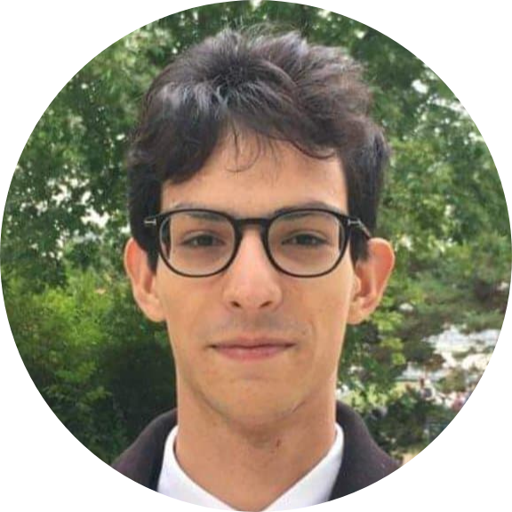

Gonçalo Maia Giga
Student Engineer in Computer Science and Artificial Inteligence —————————————————————
:mailbox: 3 Rue Jacques Kablé, Strasbourg 67000 @ goncalo.casimiro-matias-maia-giga@etu.unistra.fr
:birthday: 15 October 1999 :round_pushpin: Strasbourg, FRANCE :phone: 0789328921
Professional Experience ———————–
During my two months of volunteer work in the emergency room of SFX Hospital, I did three main things: I served food to patients who could not eat by themselfs, went into the waiting rooms to sell breakfast, and organized a store to finance the emergency room staff. Thanks to this experience, of which I am particularly proud, I was able to understand the suffering of others whith much more lucidity. This kind of work was a little unusual for my age (I was 16 at the time), which allowed me to maintain, from that age, a desire to study science in the hope of helping others. Today, more than ever, this hope still remains in me.
In early 2021, I started working on a project with the électricité de Strasbourg (ES). The goal of my work is to come up with a solution to classify intelligently their large email database with Natrual Language Processing techniques, and if such task is achieved before 2022, to also categorize the calls they recieve on a daily basis. I am supervised by the CIO of ES with whom I also participated in an hackaton where I created a simple chatbot for ES and learned a lot about the pratical ways one can implement Natural Language Understanding.
Technical Experience ———————–
My first ever computer science project, started in 2019 when I was in a classe préparatoire aux grandes écoles. The goal of my project was to understand and use an Hopfield Network that could converge to a satisfactory solution of the TSP. At that time, I did not have enough technical experience to really implement my solution but I still learned a lot about Hopfield Networks, and neural networks in general.
Here is a link to my project report.
When I first started Computer Science (in 2019) I did multiple basic projects in C and C++. A program to find the best route in the Paris subway (written in C), a chess game engine (written in C++) and a simplified version of CMake (written in C++ and yacc/bison). I recently added this last project to the Git of my Computer Science association ITS:
The link to the last project git
Me and 4 other students of Télécom Physique Strasbourg, built a compiler for a simplified version of Pascal, called Scalpa. The compiler works for a MIPS architecture and outputs code written in mips assembly code. The compiler is written in C, using yacc and buison for the syntax and lexical analysis. The code is avaible in the teams’s git. In order to be tested it is neccesary to use a mips processor emulator; we used spim for that.
The first IA project I did, used R and statistical analysis to cluster food habits and political speeches. After this introduction, I was able to solve a shedule problem for the University of Strasbourg using an Artificial Evolution platform called easena. Then, I tested both UNet and ResNet neural networks, when participating in a challenge aimed at predicting the ground mask of satellite imagery.
A link to my first project report
While working with ES, me and my team used NLP statistical and probabilistic algorithms such as LSI, pLSI and LDA to classify an email data base into different topics. We are also working with BERT (actually the french version camenBERT), in an attempt to create a somewhat hybrid model that applies both probabilistic appproches like LDA and also deep learning. When creating a chat bot for ES, I used RASA (a powerfull NLU tool using tensorflow) and Node RED in order to create a bot that helps ES clients with eletrical problems in their houses.
Technical Skills ———————–
Here is a list of programming languges I love and use quite often: > * C/C++ > * Python > * Java > * R > * Matlab
Other languages I know but don’t use that often: > * Erlang > * OCaml > * Pascal
Web and Database is not my specialty, yet I still played around, in my free time, with: > * HTML > * CSS > * PHP > * SQL
- Windows
- Linux
Since I first started using Linux in 2019, I never managed to stop. As for the distribution, I use either Debian (for a server I have at home) or Ubuntu (for my laptop)
- Latex
- Markdown
I used Latex for almost everything for a long time, but now I’m taking a shot at Markdown, from which this very CV is made : )
About Myself ———————–
When I’m outside of the Computer Science world, I mostly like to read. During the previous years, I have mostly read philosophy, which was a passion of mine for a long time. Now, I’m starting to read on other subjects, like politics, sociology or more recent papers on Computer Science. I’m trying to learn more about economics on my free time, and found out it is something I quite enjoy too !
I spent half of my live in France and half of my live in Portugal. I’m therefore fluent in both French and Portuguese. I’m also fluent in English, or at least good enough to understand and to be understood.
- Fench
- Portuguese
- English
My Education ———————–
Since 2020, I’m doing a double’s degree alowing me to do both the Engineer school (Télécom Physique Strasbourg) and a master’s degree in Computer Science (Université de Strasbourg)
I entered Télécom Physique Strasbourg after passing the exam of the grandes écoles d’ingénieur. Télécom Physique Strasbourg is an engineer school inside the Institut Mines-Télécom academic institution.
After Highschool, I entered a preparatory class (classe préparatoire aux grandes écoles) at the Lycée Chaptal in Paris.
This is the highschool I atended, in the center of my home city, Lisbon <3